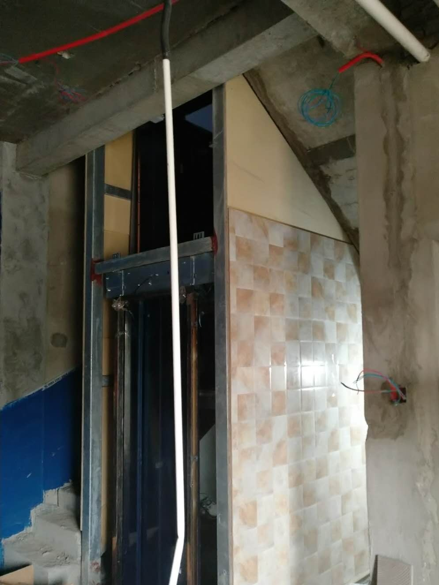
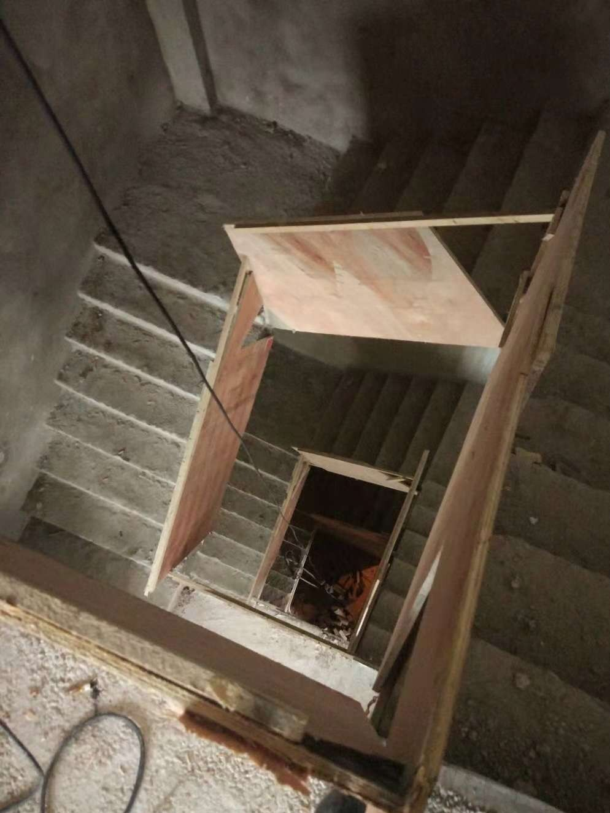
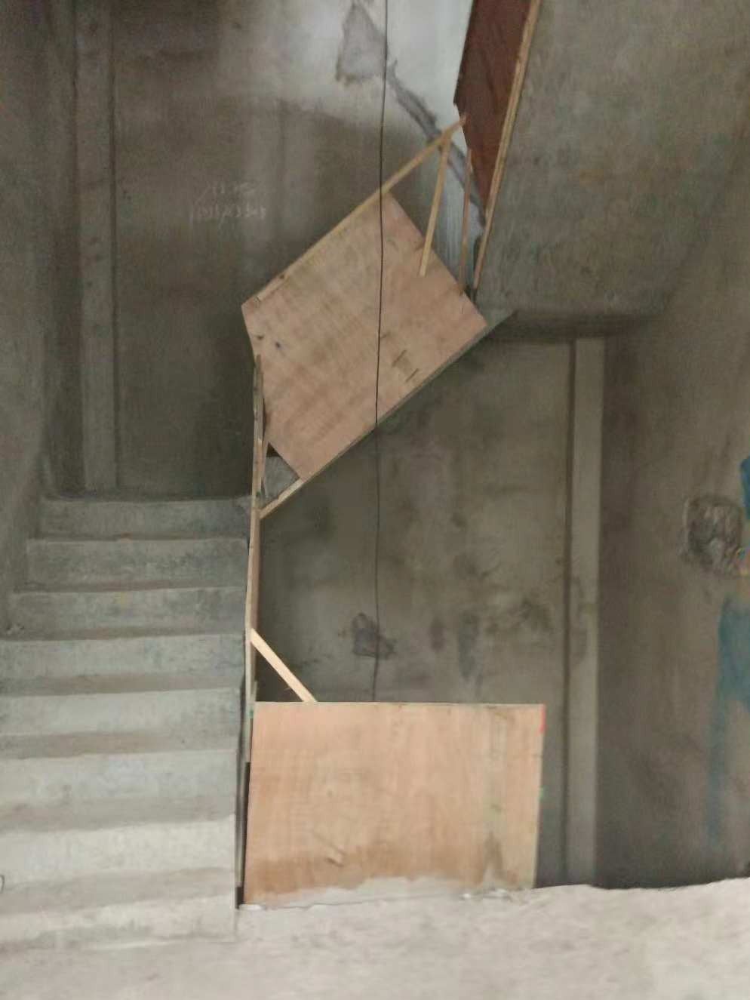
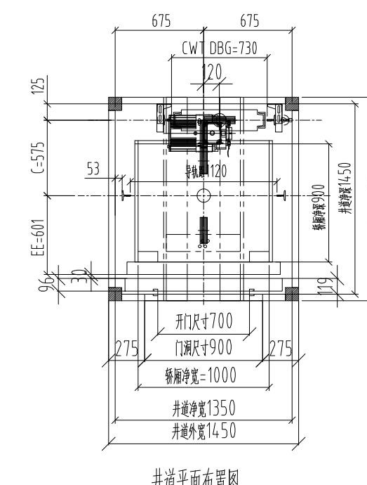
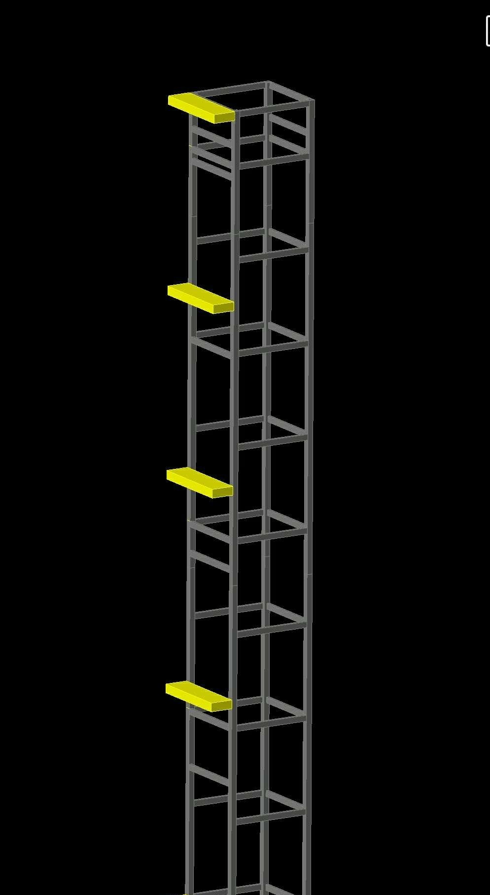
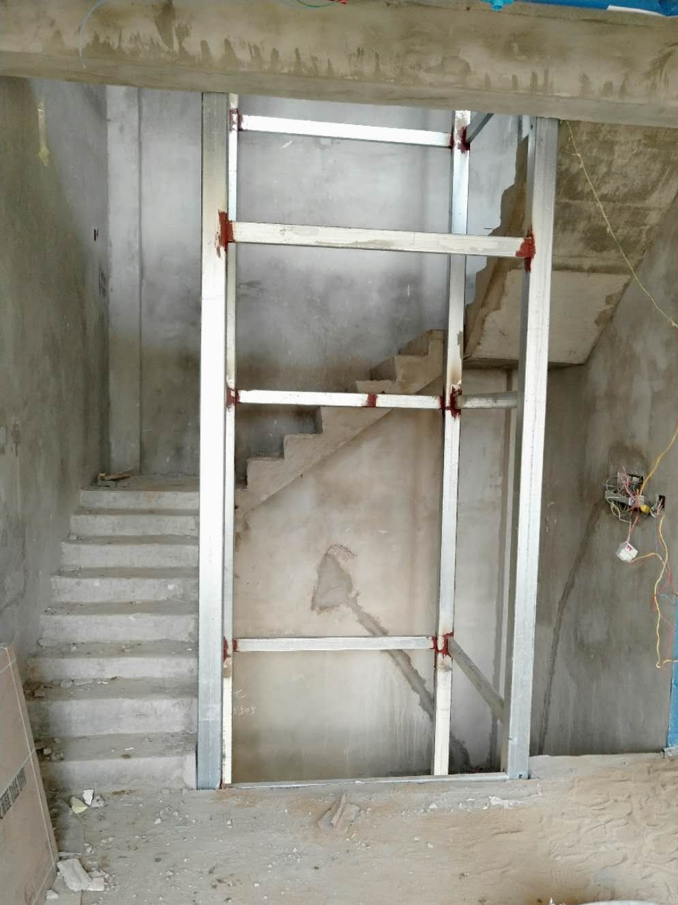
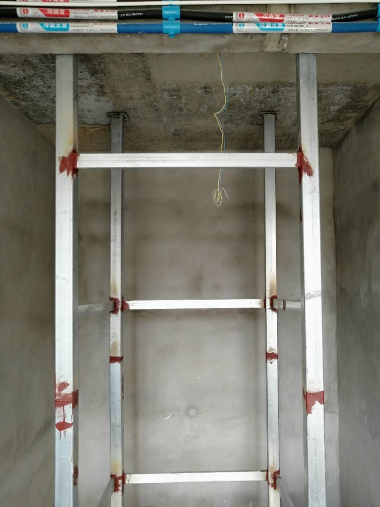

案例 / 河南家用电梯 / U型楼梯中间
案例背景
项目位于河南固始华侨名苑，属于 U 型楼梯中间空间内加装家用别墅电梯的场景。
这类项目最有价值的地方，不在于“装没装成”，而在于图纸、结构和完成效果能不能一起成立。
现场条件
| 项目 | 记录 |
|---|---|
| 项目类型 | U 型楼梯中间加装家用别墅电梯 |
| 关键尺寸 | 开门宽约 700 毫米，门洞约 900 毫米，轿厢净宽约 1000 毫米 |
| 井道关系 | 井道净宽约 1350 毫米，井道外宽约 1450 毫米 |
| 结构判断 | 按钢结构井道和焊接图纸推进 |
这组尺寸说明一个很现实的问题：小尺寸别墅里，门、井道和轿厢不是分别看，而是必须一起看。
方案判断
方案是按现场条件做钢结构井道和焊接图纸，再推进设备和安装。
对这类项目，先把结构和动线算清楚，比先定外观更重要。
- 先看楼梯关系，再看井道是否成立。
- 先看门洞与轿厢净宽，再看门型是否好用。
- 先把结构受力理顺，再推进设备落地。
对业主的参考价值
适合楼梯中间空间紧张、又想做家用电梯的别墅业主参考。
钢结构井道的价值，不是把空间“塞满”，而是让尺寸和受力先成立。
俞工点评
小尺寸别墅装电梯，最重要的是把井道、门洞、轿厢净宽和楼梯动线一起看，别只盯着单个尺寸。
常见问题FAQ
U 型楼梯中间空间很小，还能装家用电梯吗？
先看净尺寸、楼梯关系和结构受力，再判断是否适合做钢结构井道。空间小不代表不能做，但一定不能先拍脑袋定方案。
这类项目为什么要先出钢结构井道图纸？
因为土建井道往往不完整，图纸要先把受力、开门和尺寸关系理顺，后面的设备和安装才有落点。
井道净宽、门洞和开门尺寸为什么要一起看？
因为这三个数字会互相影响，单独看一个数字没有意义。只有一起判断，才能知道轿厢是否能用、门是否好开。
没有预留井道时，最先该看什么？
先看楼层、底坑、顶层高度、楼梯中间位置和结构是否允许，再决定是不是适合继续推进。
图片记录








如果你家也是自建房、别墅或楼梯中间空间想加装家用电梯，建议先让俞工根据现场尺寸、井道条件、地坑和顶层高度做一次判断，再确定方案和预算。咨询电话：15056952050。